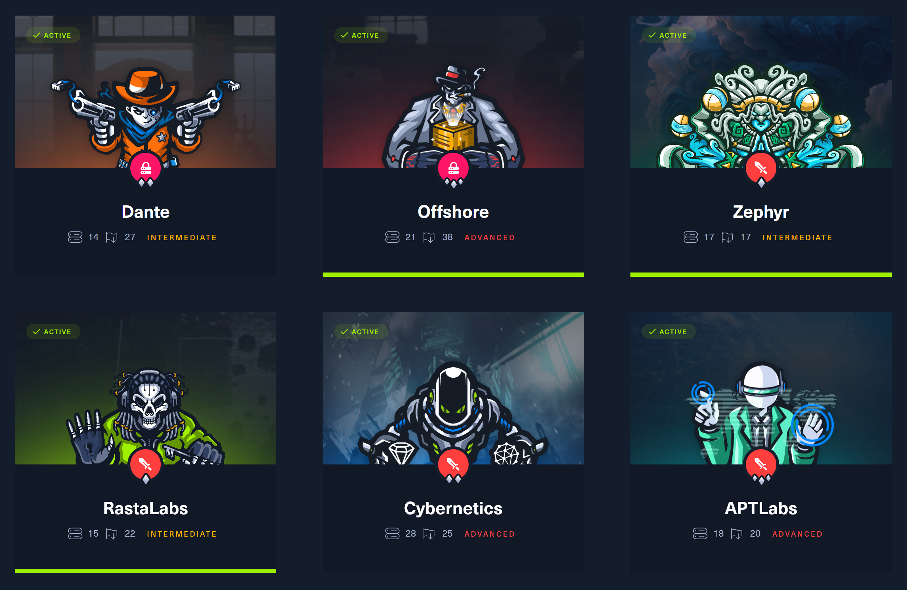
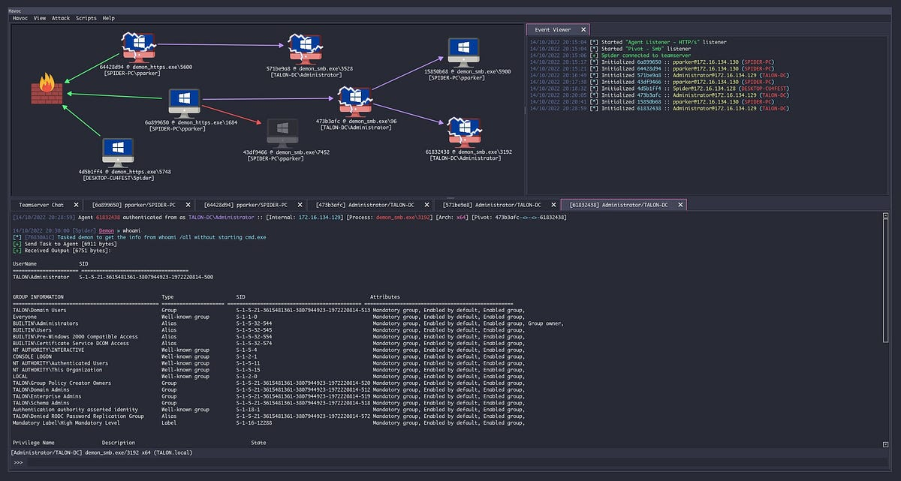

Introduction
During the summer month of July and August of 2023 I had the opportunity to complete three of the six buyable HackTheBox Pro Lab certifications: Offshore, a Penetration Tester Level 3 lab, as well as RastaLabs and Zephyr, both of which are Red Team Operator Level 1 certifications respectively. In this blog post I want to outline my experiences, struggles and learning outcomes of these labs and provide my personal opinion on them.
These networks greatly improved my understanding of Active Directory infrastructure, enumeration and exploitation. While I will roughly explain the topics and attack vectors covered in each lab in the following paragraphs, this blog is in no way intended to serve as a walkthrough and will not go into detail regarding the exploitation steps in order to protect the integrity of the certifications.
What are HackTheBox Pro Labs?
HackTheBox is one of the leading companies in the field of cyber security training and certification. They offer a wide variety of free and paid services, including free penetration testing training machines that can be used to hone enumeration and exploitation skills on Linux or Windows targets. In addition to these standalone boxes, the platform also provides paid access to the so-called HackTheBox Pro Labs for advanced training purposes. Pro Labs are immersive Active Directory networks that are designed to simulate real-world environments and consist of multiple machines that are connected to each other. The overall goal of each lab is to obtain Domain Admin privileges on the entire network and collect all flags along the way that are then submitted as a proof of compromise. While some flags are necessary to progress through the lab, others are acquired by completing additional exploitation on standalone domains or machines in the network. After completion, a certificate is issued that can be used to prove the holder's skills and knowledge in the field of penetration testing Active Directory environments and red team tactics.

The Pro Lab service is subscription based: For 40€ per month, a buyer gets access to all 6 networks with difficulties ranging from suiting beginner penetration testers to APT-level red team operators. The labs can be completed via VPN access in any order and at any time, as long as the subscription is active.
Offshore: Trust Terror
Starting a week into July, the Offshore lab was the first network I tackled. This Penetration Tester Level 3 lab consists of 21 machines with a total of 38 flags to be collected along the journey. With an environment that big, it was no surprise that the Offshore lab took me the longest to complete. Without taking away too much from the attack vectors and topics covered in the lab, Offshore focuses primarily on conventional penetration testing, which includes exploiting CVEs, credential gathering and common Active Directory misconfigurations. Where I took away the most from the lab was the enumeration and exploitation of domain and forest trusts. Due to the sheer size of the network, the Offshore network was divided into multiple domains with different trust relationships between them. It was more often than not necessary to obtain Domain Admin privileges on one domain in order to access the next one. Visualizing the landscape with tools like BloodHound was absolutely crucial for finding the necessary attack vectors to progress.
For auditing a network of this scale, simple reverse shell handlers are simply not enough to keep track of all the machines and their respective shells. It demands for a more advanced approach, using a Command & Control framework. The C2-Matrix provides a great overview of the most popular frameworks and their respective features, like Metasploit or the infamous Cobalt Strike. I personally fell in love with the Havoc framework, due to its beautiful user interface, open source code and uncanny similarity to the commercial Cobalt Strike. Havoc manages sessions that are created by executing agents (so-called demons) on the target machines and allows the user to use a variety of commands and modules to interact with the victim hosts.

It was also in this lab when I learned the importance of pivoting. For those unaware, pivoting is the process of using a compromised machine to attack other machines in the network. This is especially useful when the compromised machine is not directly accessible from the attacker's machine. While I initially attempted to pivot using a socks proxy on the target machine and proxychains on the attacker box, this turned out to be very inefficient and resulted in the incredible long runtime of scans and commands. Luckily, I came across the fantastic ligolo-ng tool, which instead uses a TCP tunnel to forward traffic from the target machine to the attacker's machine. This greatly improved the speed of scans and commands and made the lab a lot more enjoyable. It also proved to be very useful for the subsequent labs, since those are heavily reliant on pivoting as well.
Overall, I absolutely enjoyed the Offshore lab. It was a great introduction to the Pro Labs and provided a lot of knowledge that I could apply to the subsequent labs. However, some flags where hidden in very specific places and required a lot of enumeration to find, which was slightly annoying, especially since I had already compromised the entire forest and but still had to go back to the side quests to obtain the certificates. The intention behind that is obviously to teach new techniques and encourage the user to enumerate more, but I personally found it slightly annoying at the end.
RastaLabs: Evasion Madness
I started RastaLabs, the first Red Team Operator lab in the series directly after finishing Offshore. In contrast to the aforementioned, RastaLabs only contains 15 machines and requires 22 flags to be submitted. RastaLabs is heavily oriented towards red teaming and focuses on the evasion of detection mechanisms. This includes the evasion of anti-virus software, network traffic monitoring and bypassing other endpoint restrictions like AppLocker. This proved to be rather challenging, since I had never dealt with AV evasion of this scale before. It in turn provided a great learning experience and motivated me to dive deeper into malware development and evading detection mechanisms and lead me to create a simple shellcode stager using Nim which I used to execute my Havoc demons in-memory. Since RastaLabs is a Red Team lab, it included the exploitation of interactive users via malicious phishing emails and a lot of interesting credential harvesting techniques, like exploiting a KeePass password database.
Of course I also discovered numerous new Active Directory and Kerberos exploitation techniques, as well as other attacks that I found incredibly interesting. At this point I want to mention two resources that helped me a lot during the labs: HackTricks and ired.team. Both of these sources provide valuable information on penetration testing tools, privilege escalation, Active Directory exploitation and much more. I can highly recommend them to anyone who is interested in learning more about these topics.
What made RastaLabs challenging was the fact that I had to reconfigure and adapt my tools due to the presence of the anti-virus software on the target hosts and firewall rules that blocked certain ports. The later was especially crucial since ligolo-ng uses an uncommon high port for it's TCP tunnel, so I had to change it in order to pivot through the network. Havoc's dotnet module was also very useful for executing .NET assemblies on the target machines in-memory without having to upload a binary to the target machine and evading detection by the anti-virus at the same time. As an example, the following command executes Rubeus in-memory on the target machine with the triage command to enumerate Kerberos tickets on the machine.
dotnet inline-execute /opt/win-binaries/Rubeus.exe triage
I really enjoyed RastaLabs because it taught me a lot of new techniques and procedures. Since I was already familiar with my toolset from the previous lab, I was able to progress through the lab a lot faster and complete it after roughly 10 days. Again, my only complaint is that some flags were hidden in very strange and specific places and required a lot of enumeration and support to find. I also want to give a heads-up to anyone who is interested in starting RastaLabs: Use multiple different password lists for brute-forcing or cracking and consider creating your own, it will save you a lot of time.
Zephyr: Pivoting Nightmare
After the quick and successful completion of RastaLabs, I was highly motivated to attack the Zephyr Pro Lab. This Red Team Operator Level 1 lab consists of 17 machines and 17 flags and to me seemed like a combination of Offshore and RastaLabs. From Offshore, it inherited the cross-domain and forest trust attacks while it also featured interactive users and defense evasion like RastaLabs, but to a lesser extent. What was very different to the previous networks is that no machine in the Zephyr lab allowed RDP access, meaning I had to rely purely on Havoc und evil-winrm for remote access and post-exploitation. In addition to that, my good friend ligolo-ng came in handy again for pivoting through the network, where some hosts where pretty tricky to reach.
Zephyr covered a variety of Active Directory misconfiguration relating to ACL abuse and group memberships, as well as very interesting MSSQL Server attacks. It also featured CVEs that I had not heard of before, which was a great opportunity to learn about new exploits and how to use them. It also proved to be beneficial to improve my enumeration and local privilege escalation skills.
At this point, I was already very familiar with the Active Directory penetration testing process and knew what to look for when I encountered different AD ACLs or configurations. I had also become very comfortable with Havoc, Bloodhound, Rubeus, mimikatz and loads of other tools I consistently used during the labs. Like RastaLabs, Zephyr took me roughly 10 days to finish and thus completed my summer of Pro Labs. While for this lab, the flags very not as hidden as in the previous labs, I had some issues with pivoting to certain machines, which was very frustrating at times and it seemed to me like the lab was significantly less stable than the previous ones.
Conclusion
HackTheBox's Offshore, RastaLabs and Zephyr undoubtedly took my understanding of Active Directory infrastructure, configuration and exploitation to another level. I have learned by far the most during these labs and I am very happy to have been able to complete them. I can highly recommend them to anyone who is interested in improving their Active Directory skillset as well as anyone who wants to discover new adversarial techniques and procedures. This is however not the end! I am looking forward to completing the remaining three Pro Labs, especially the advanced Cybernetics and APT Labs networks and will write a follow-up blog post once I have finished them as well.
I hope you enjoyed reading my first proper blog post and I would love to hear your thoughts on it. Feel free to reach out to me on LinkedIn if you have any questions or feedback. I would also appreciate a follow on GitHub, where I upload tools and scripts that I used during the labs, as well as my malware development projects.